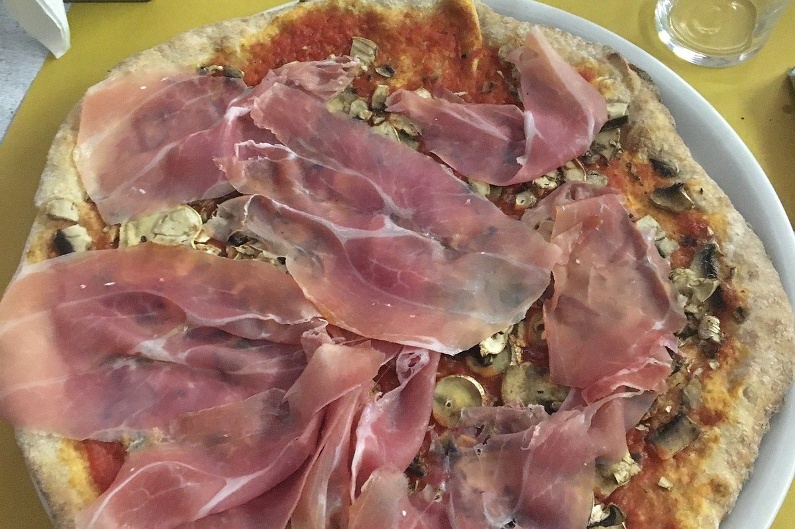

Pizze con impasto al farro, al kamut e senza glutine. Mozzarella senza lattosio. Birre artigianali. Un ambiente accogliente e familiare a Viale dell'Appennino.

Il Los Locos è una Pizzeria e Birreria a Forlì dal 1992. Qualità, amore per il lavoro e attenzione alle esigenze di chi ci visita sono i nostri punti di forza.
Offriamo pizze con impasto tradizionale, al farro senza lievito, senza glutine con lievito madre e impasto Tipo 1 macinata a pietra. Birre artigianali, mozzarella senza lattosio e un menù senza glutine per chi ne ha bisogno.
Aperto tutti i giorni tranne il lunedì. Festività su richiesta — chiamaci per confermare.
⚠️ Orari indicativi. In caso di festività o chiusure straordinarie, conferma chiamando il 0543 480735.
Tradizionale, farro, kamut, senza glutine, Tipo 1 macinata a pietra.
Una selezione di birre artigianali per accompagnare le tue pizze.
Mozzarella e opzioni senza lattosio per chi ne ha bisogno.
Opzioni dedicate con stoviglie arancioni per un servizio sicuro.
Accogliente e informale, ideale per pranzi, cene e incontri amici.
Chiamaci per concordare il tuo momento. 0543 480735.
Prenota la tua tavola telefonicamente. Siamo a Viale dell'Appennino 697, Forlì.
📞 0543 480735